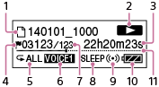

播放时显示

注意
- 上面所示的窗口显示用于说明目的的指示、数字或项目。实际窗口显示的内容可能与此有所不同。
- 文件信息
显示当前正在播放文件的文件信息。
播放使用IC录音机录制的文件时，按此顺序显示文件名和文件夹名，之后显示文件名。
 ：文件名
：文件名：文件夹名
播放音乐文件或播客文件时，按此顺序显示标题和艺术家名称，之后显示标题。
：标题
：艺术家名
- 操作模式指示
根据IC录音机当前的操作，显示如下。
：播放
：停止
：回放/快退，提示/快进
：连续后退/前进
- 经过时间显示
显示正在播放的文件经过的时间。
- 曲目标记指示
显示当前位置前的曲目标记号。为某个文件设置曲目标记时出现。
- 播放模式指示
1：播放某个文件时显示。
：连续播放某个文件夹中的文件时显示。
ALL：连续播放所有文件时显示。
1：重复播放某一文件时显示。
：重复播放某个文件夹中的文件时显示。
ALL：重复播放所有文件时显示。
- 清晰语音/音效指示
菜单中的“清晰语音”或“音效”设为“关”以外的其他设置时显示。
：清晰语音1
：清晰语音2
：流行
：摇滚
：爵士
：重低音1
：重低音2
- 文件编号信息
所选文件编号以分子显示，文件夹所含文件的总数以分母显示。
- 睡眠定时器指示
睡眠定时器设定时出现。
- 闹铃指示
在某个文件中设置闹铃时出现。
- 电池电量指示
- 播放位置
显示当前播放位置。